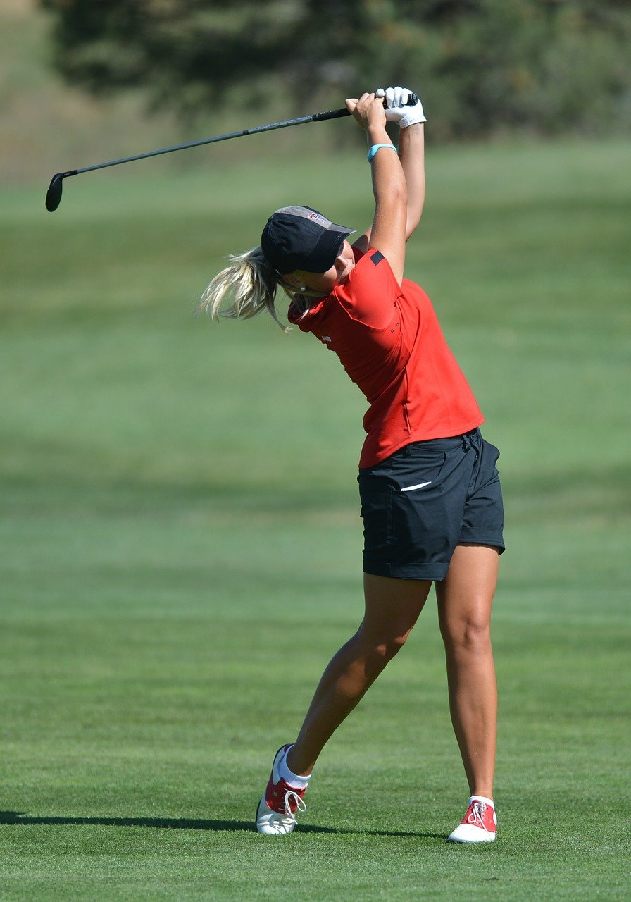

À propos

Qui suis-je ?
Pour que chaque partie de votre corps joue son rôle de manière optimale, j'interviens de façon à le rééquilibrer entièrement. Chaque patient étant unique, les consultations doivent l'être aussi !
C'est pourquoi les maux qui vous dérangent doivent être diagnostiqués, prévenus et traités en prenant en compte votre profil et vos propres ressentis. Ma priorité est de comprendre vos attentes pour soulager vos douleurs et vous permettre de retrouver votre mobilité.
Coureur passionné, je porte une attention particulière aux sportifs et aux problématiques liées à la pratique sportive intensive. Cette expérience personnelle enrichit mon approche clinique et me permet de mieux comprendre les contraintes et les attentes de mes patients sportifs.
5 années de formation — Ostéopathe D.O. reconnu et inscrit aux registres officiels.
Pratiquant régulier de la course à pied, je comprends de l'intérieur les besoins des coureurs.
Consultations du lundi au samedi, sur rendez-vous via Doctolib ou par téléphone.
Qui consulte ?
L'ostéopathie s'adresse à tous, quel que soit l'âge ou le mode de vie. Je m'adapte à chaque patient pour proposer une prise en charge véritablement personnalisée.

